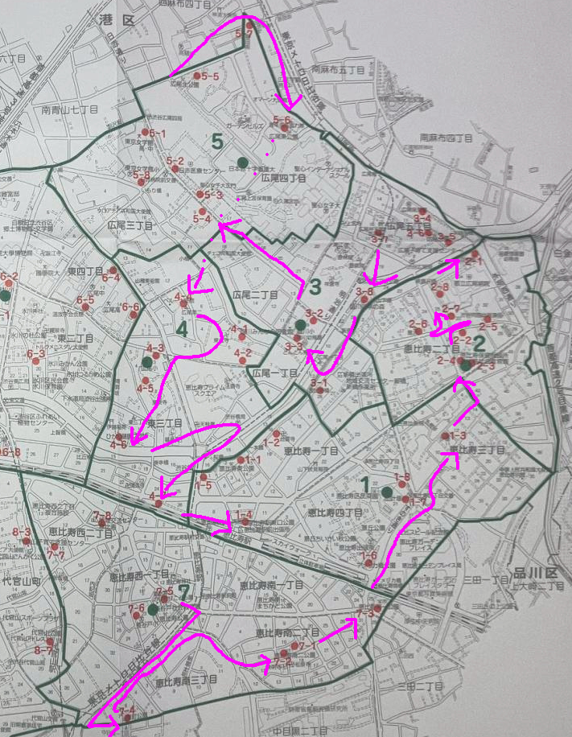

2025年版 Sammyの担当ブロック

7-4 恵比寿南3丁目7番26号 原町公園 外側壁面
7-2 恵比寿南2丁目11番1号 恵比寿南二公園② 南側植込み
7-1 恵比寿南2丁目11番1号 恵比寿南二公園① 北側植込み
7-3 恵比寿南1丁目26番1号 恵比寿南一公園 西側壁面
ブロック7Sammy分終わり
1-6 恵比寿4丁目20番55号 アメリカ橋公園 植込み
1-7 恵比寿4丁目21番10号 加計塚小学校① 南側植込み
1-8 恵比寿4丁目21番10号 加計塚小学校② 東側植込み
1-3 恵比寿3丁目11番2号 伊達児童遊園地 東側縁柵
2-3 恵比寿2丁目27番18号 恵比寿社会教育館① 南側植込み
2-4 恵比寿2丁目27番18号 恵比寿社会教育館② 西側コンクリート塀
2-2 恵比寿2丁目27番3号 日本郵便 恵比寿郵政宿舎 鉄柵
2-5 恵比寿2丁目32番21号 豊沢教会管理駐車場 ブロック塀
2-6 恵比寿2丁目17番19号 豊沢児童遊園地 植込み
2-7 恵比寿2丁目34番10号 都立広尾病院② 西側植込み（南寄り）
2-8 恵比寿2丁目34番10号 都立広尾病院③ 西側植込み（北寄り）
2-1 恵比寿2丁目34番10号 都立広尾病院① 東側植込み
ブロック2Sammy分終わり
3-5 広尾5丁目7番4号 広尾公園① 南側植込み
3-6 広尾5丁目7番4号 広尾公園② 西側鉄柵
3-4 広尾5丁目7番1号 広尾保育園 植込み
3-7 広尾7丁目16番14号 広尾児童遊園地 金網
3-8 広尾5丁目23番8号 臨川四季の森 鉄柵
3-1 恵比寿1丁目28番1号 あいおいニッセイ同和損害保険株式会社 北側植込み
3-3 広尾1丁目9番17号 臨川小学校② 西側コンクリート塀
3-2 広尾1丁目9番17号 臨川小学校① 東側鉄柵
ブロック3Sammy分終わり
5-4 広尾3丁目9番11号 NHK羽沢寮 鉄柵
5-3 広尾4丁目1番 日本赤十字医療センター② 南西側植込み
5-2 広尾4丁目1番 日本赤十字医療センター① 正門横植込み
5-8 広尾3丁目7番16号 東京女学館② 西側縁
5-1 広尾3丁目7番16号 東京女学館① 東側縁
5-5 広尾4丁目1番40号 広尾北公園 植込み
5-7 広尾4丁目2番1号 関東財務局 宮代住宅 石垣（金網フェンス）
5-6 広尾4丁目2番27号 広尾東公園 植込み
ブロック5Sammy分終わり
4-4 広尾2丁目3番9号 広尾第二児童遊園地 入口植込み
4-1 広尾2丁目5番11号 臨済宗東北寺① 正面植込み
4-2 広尾2丁目5番11号 臨済宗東北寺② 南西側生垣
4-3 東3丁目3番3号 広尾小学校 東側コンクリート塀
4-5 東3丁目3番1号 広尾幼稚園 コンクリート塀
4-6 東3丁目14番13号 ひがし健康プラザ 南東側植込み
1-2 恵比寿1丁目19番15号 ウノザワ東急ビル 北側植込み
1-1 恵比寿1丁目2番16号 恵比寿東公園 南側植込み
1-5 恵比寿1丁目1番 渋谷橋自動二輪車等駐車場 金網
4-7 東3丁目27番先 東三丁目バイク専用駐車場 植込み
ブロック4Sammy分終わり
1-4 恵比寿4丁目2番6号 恵比寿駅東口公園 鉄柵
ブロック1Sammy分終わり
終了